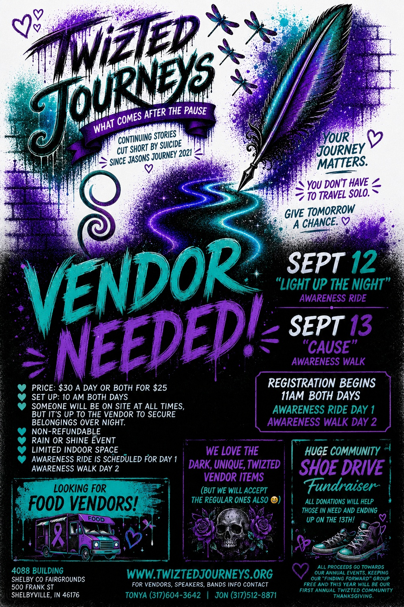
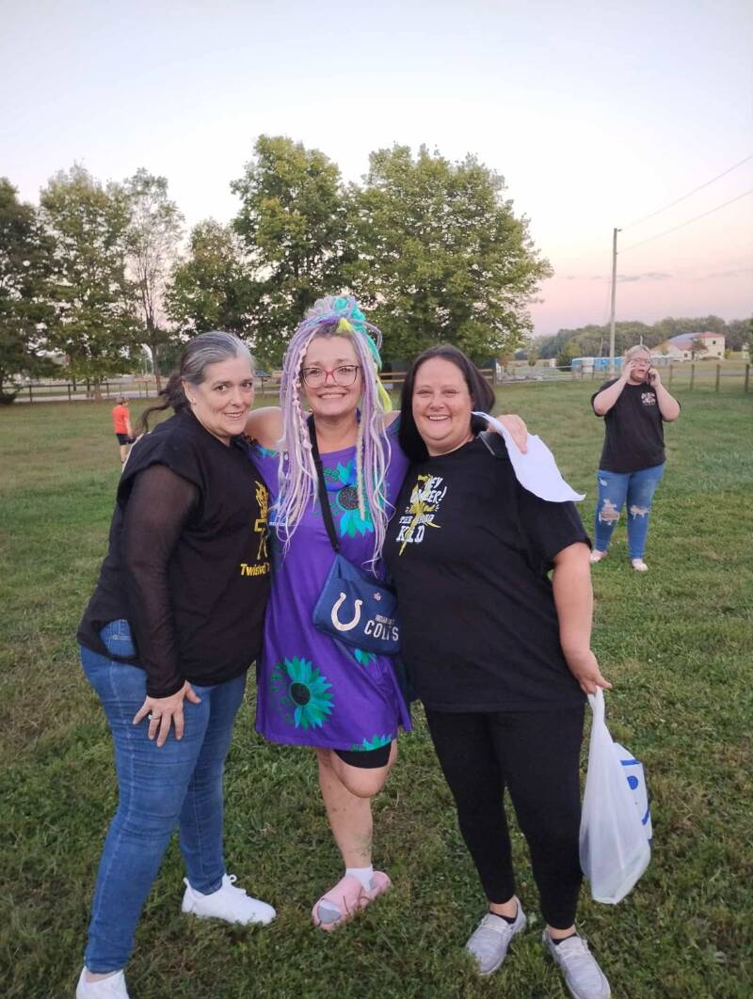

Community Events
Where We've Been — And What's Next
Our events are free, open to the community, and built around awareness, healing, and hope.
Upcoming · 2026
September — What Comes After the Pause
Two days at the Shelby County Fairgrounds in Shelbyville, Indiana.
Join us September 12–13, 2026 at the Shelby County Fairgrounds for two days of awareness, community, and healing. Riders, walkers, families, and friends — everyone is welcome. Wear purple and teal.

🏍 Awareness Ride · Day One
Light Up the Night
📍 Shelby County Fairgrounds, Shelbyville IN | 🕚 Registration 11AM | 📬 100 Prairie Ave
Our annual awareness motorcycle ride. Riders, supporters, families, and friends are all welcome. Wear purple and teal. Vendors welcome at $50/day.
🚶 Awareness Walk · Day Two
The Cause — Awareness Walk
📍 Shelby County Fairgrounds | 🕚 Registration 11AM | 📬 100 Prairie Ave
Community walk in memory of the lives we've lost and in support of those still fighting. All ages, all backgrounds. Bring a photo of your loved one to carry with you.
Interested in vending?
Vendor spaces are available both days — $50/day. Makers, food vendors, resource tables, and awareness organizations are welcome. Reserve your spot early.
Email to Reserve Your Space
Our History
Where We've Been
Since 2021, Twizted Journeys has hosted awareness rides, community walks, vendor events, and peer gatherings across Shelbyville and surrounding counties. Every year has brought more community, more healing, and more hope.
2025 — Light Up the Night
Our 2025 awareness event brought together riders, walkers, and community members for a powerful night of awareness.
2022 — A Journey to Be Stigma Free
A landmark two-day event — our second annual benefit ride and first annual awareness walk.
2021 — The Beginning
Driven by personal loss, Tonya and her daughter launched what would become Twizted Journeys.


Peer Support
Finding Forward
Finding Forward meets every Tuesday evening in Shelbyville — a free peer support group for anyone processing grief, loss, or mental health struggles. Adults 18+.
Email for Details